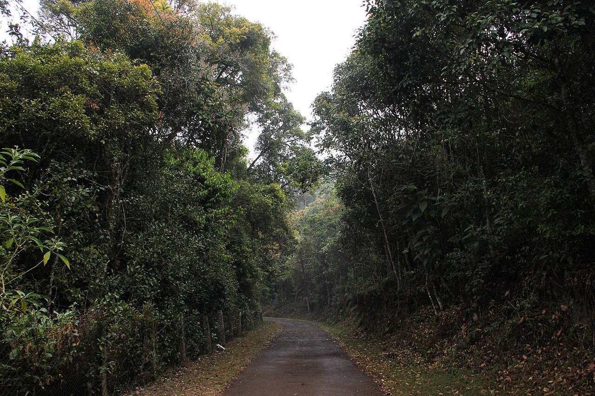

Recognising overlooked diversity
Systematics & Species Discovery
Comparative morphology, diagnostic characters, taxonomic revision and integrative species delimitation.

Bharata Mata College (Autonomous), Kochi
Organismal Research in Genomics, Integrative Systematics and Natural History
Tracing biodiversity from landscape to lineage.
ORiGIN Lab investigates how species arise, diversify and persist using field biology, morphology, molecular data, museum collections and evolutionary analysis.
Organisms • Genomes • Landscapes
The laboratory integrates field research, natural history, morphology, systematics, molecular phylogenetics, phylogenomics and museum collections.
About ORiGIN LabResearch programme
Recognising overlooked diversity
Comparative morphology, diagnostic characters, taxonomic revision and integrative species delimitation.
Reconstructing evolutionary history
Evolutionary relationships inferred using multilocus and genome-scale data, with explicit attention to uncertainty and concordance.
Connecting lineages and landscapes
Testing how vicariance, dispersal, climate and geological history shaped present-day organismal distributions.
Evidence from specimens and deep time
Connecting modern biodiversity with museum specimens, fossil inclusions, microscopy and non-destructive imaging.
TerraEvo framework
Earth history, geographic barriers, habitat structure and dispersal limitation influence how lineages originate, diversify and persist.
Research process
Habitat, locality and specimen documentation.
Microscopy, diagnostic structures and comparative characters.
DNA barcodes, multilocus datasets and genomic evidence.
Phylogeny, dating, concordance and biogeographic inference.
Publications, datasets, collections and conservation evidence.
Selected programmes
An integrative taxonomic and biogeographic revision combining morphology, molecular evidence and evolutionary analyses to resolve poorly known Western Ghats pseudoscorpion diversity.
A comparative framework designed to test whether different low-dispersal pseudoscorpion lineages preserve concordant geographic and evolutionary signals.
Comparative study of North American and East Asian lineages using museum collections, morphology, molecular evidence and phylogenomic approaches.
Field-based research supporting distributional baselines, habitat documentation and conservation assessment for threatened and poorly known Western Ghats tarantulas.
Research outputs
Jeong K-H, Oh J, Shida R, Johnson J, Harms D & Kim S
Evolutionary Systematics 10(2): 263–274
DOI: 10.3897/evolsyst.10.199765
Jeong K-H, Harms D & Johnson J
Zoosystematics and Evolution 100(1): 1–8
DOI: 10.3897/zse.100.110020
Johnson J, Loria SF, Kotthoff U, Hammel JU, Joseph MM & Harms D
Cretaceous Research 144: 105459
DOI: 10.1016/j.cretres.2022.105459
Johnson J, Loria SF, Joseph MM & Harms D
Molecular Phylogenetics and Evolution 175: 107495
DOI: 10.1016/j.ympev.2022.107495
Principal investigator
Assistant Professor · Department of Zoology, Bharata Mata College (Autonomous)
Jithin is an evolutionary biologist and arachnologist working on pseudoscorpion systematics, Western Ghats biogeography, phylogenomics, integrative taxonomy, fossil arachnids and invertebrate conservation.
Updates and coverage
18 February 2026
Bharata Mata College
The college announced Dr. Jithin Johnson’s election as a Fellow of the Linnean Society of London.
30 January 2026
Bharata Mata College
Institutional announcement of grant support for an international workshop on evolutionary systematics of soil arachnids.
2026
23rd International Congress of Arachnology
A symposium on integrative taxonomy, molecular systematics, phylogenomics and conservation coordinated by Dr. Jithin Johnson and Dr. Stephanie F. Loria.
Collaboration
Expressions of interest are welcome from students, researchers, museums and institutions working in organismal biology, systematics, genomics and natural history.